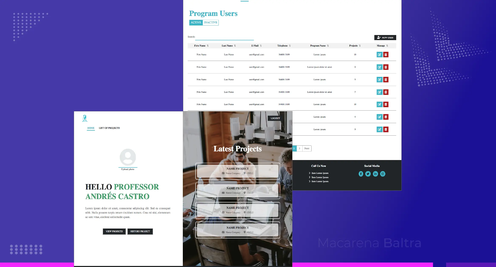
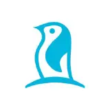

Cómo convertí wireframes estáticos en prototipos HTML5/Bootstrap clicables para una plataforma e-learning con dos perfiles de usuario con flujos distintos — estudiantes internacionales y gestores de centros educativos.
Prototyper Developer | Interaction Designer

Herramientas utilizadas
Colaboradores/Stakeholders
Contexto
En 2019, Austral Group necesitaba modernizar su sitio web, portal de back-office y aulas virtuales para dos perfiles con necesidades muy distintas: estudiantes internacionales navegando un proceso de postulación complejo, y gestores de centros educativos validando documentación interna con múltiples pasos manuales.
Desafío
Diseñar y prototipar una interfaz unificada y accesible para dos perfiles con necesidades diferentes. El entregable tenía que ser un prototipo HTML5/Bootstrap que el equipo pudiera revisar en el navegador y usar como referencia directa de implementación.
Empresa/Cliente: Austral Group

User Flows y Task Flows: Traduje los hallazgos en diagramas de flujo detallados para cada perfil — estableciendo la jerarquía de componentes, los estados de cada pantalla y los puntos de decisión críticos antes de diseñar una sola pantalla.
Wireframes y prototipado en HTML5/CSS/SASS/Bootstrap: Bocetado rápido en Illustrator y prototipado clicable en HTML5/CSS con SASS y Bootstrap 3–4. No solo wireframes estáticos — código real que el equipo de TI podía abrir en el navegador y validar directamente.
Colaboración ágil con TI: Reuniones semanales con el equipo de back-end para ajustar flujos, mensajes de error y estados de carga en tiempo real — reduciendo el gap entre diseño y desarrollo en cada ciclo.
Resultados
Feedback positivo de stakeholders en cada ciclo — el cliente calificó la nueva interfaz como "más clara", "amigable" y "fácil de navegar" durante las revisiones semanales con TI.
Coherencia visual unificada — dashboards, aulas virtuales y portal de back-office con un sistema visual renovado.
Nota de metodología: el proyecto fue entregado en 2019 y quedó pendiente de implementación final por prioridades internas de Austral Group.
Como Interaction Designertracé mapas de User Flow y Task Flows para seguir el recorrido completo de estudiantes y gestores en la plataforma. A partir de esos diagramas identifiqué los patrones de interacción críticos y establecí la jerarquía de componentes — botones, formularios, menús y estados de error — antes de construir una sola pantalla.
Como Prototyper Developer llevé esos flujos a código real: prototipos clicables en HTML5, SASS y Bootstrap que el equipo de TI podía abrir en el navegador y usar como referencia directa.
Cada ronda de pruebas de usabilidad confirmó que las microinteracciones diseñadas eliminaban las fricciones principales — y cada ajuste quedó documentado para facilitar la implementación cuando el proyecto retome su desarrollo.